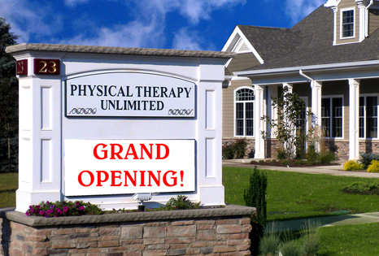

Events
To register or for more information, please call (908) 756-8898, or email info@ptunlimited.com.04.27.2011 (7:00pm)
FREE Special Presentation @ P. T. Unlimited:
Back by popular demand!
Understanding (and Using) the Law of Attraction: By learning how to activate the laws of attraction, you will be able to create a healthy, full, and balanced life. This workshop/lecture given by Dr. Barbara S. Krebs, Certified Life Empowerment Coach, psychology Professor and author, provides an understanding of how your thoughts create your reality and, by changing your thoughts to what it is you truly desire, you will unlock the secrets of manifesting what is meaningful and important to you!
Back by popular demand!
Understanding (and Using) the Law of Attraction: By learning how to activate the laws of attraction, you will be able to create a healthy, full, and balanced life. This workshop/lecture given by Dr. Barbara S. Krebs, Certified Life Empowerment Coach, psychology Professor and author, provides an understanding of how your thoughts create your reality and, by changing your thoughts to what it is you truly desire, you will unlock the secrets of manifesting what is meaningful and important to you!
04.13.2011 (12:30pm)
FREE Special Presentation @ P. T. Unlimited:
Diabetes & Hypertension: Diabetes and hypertension can have significant detrimental effects on our good health. Join Dr. Nikki Conte, N.D., naturopathic physician, as she explains how good nutrition and supplements can affect and assist with the management of these conditions.
Diabetes & Hypertension: Diabetes and hypertension can have significant detrimental effects on our good health. Join Dr. Nikki Conte, N.D., naturopathic physician, as she explains how good nutrition and supplements can affect and assist with the management of these conditions.
03.16.2011 (12:30pm)
FREE Special Presentation @ P. T. Unlimited:
From 14 - 74 years old: Agelessness in Pilates No matter what your age or condition, Pilates will work for you. Pilates is a safe, sensible exercise system that will help you look and feel your best. Pilates teaches body awareness, good posture and graceful movement. Pilates improves flexibility, agility, and economy of motion. It can even help alleviate back pain. Join us for this free informative talk and demo lead by instructor Shirley Wallitsch, practitioner of studio and reformer Pilates, and learn how you, too, can achieve agelessness in Pilates.
From 14 - 74 years old: Agelessness in Pilates No matter what your age or condition, Pilates will work for you. Pilates is a safe, sensible exercise system that will help you look and feel your best. Pilates teaches body awareness, good posture and graceful movement. Pilates improves flexibility, agility, and economy of motion. It can even help alleviate back pain. Join us for this free informative talk and demo lead by instructor Shirley Wallitsch, practitioner of studio and reformer Pilates, and learn how you, too, can achieve agelessness in Pilates.
02.16.2011 (12:30pm)
FREE Special Presentation @ P. T. Unlimited:
Is Stress Making you Fat? Do you think being overweight is just a matter of “mind over body?” Hear Dr. Nikki Conte, a Naturopathic doctor, demystify the factors that prevent you from losing weight. Learn about the physiological stress factors that sabotage weight loss. Discover how conditions affect the conversion of food and stored fat into energy - the basis of weight loss.
Is Stress Making you Fat? Do you think being overweight is just a matter of “mind over body?” Hear Dr. Nikki Conte, a Naturopathic doctor, demystify the factors that prevent you from losing weight. Learn about the physiological stress factors that sabotage weight loss. Discover how conditions affect the conversion of food and stored fat into energy - the basis of weight loss.
02.09.2011 (12:30pm)
FREE Special Presentation @ P. T. Unlimited:
Understanding (and Using) the Law of Attraction: By learning how to activate the laws of attraction, you will be able to create a healthy, full, and balanced life. This workshop/lecture given by Dr. Barbara S. Krebs, Certified Life Empowerment Coach, psychology Professor and author, provides an understanding of how your thoughts create your reality and, by changing your thoughts to what it is you truly desire, you will unlock the secrets of manifesting what is meaningful and important to you!
Understanding (and Using) the Law of Attraction: By learning how to activate the laws of attraction, you will be able to create a healthy, full, and balanced life. This workshop/lecture given by Dr. Barbara S. Krebs, Certified Life Empowerment Coach, psychology Professor and author, provides an understanding of how your thoughts create your reality and, by changing your thoughts to what it is you truly desire, you will unlock the secrets of manifesting what is meaningful and important to you!
01.26.2011 (12:30pm)
FREE Special Presentation @ P. T. Unlimited:
Is Stress Making you Fat? **Rescheduled for 2/16/11 due to snow!** Do you think being overweight is just a matter of “mind over body?” Hear Dr. Nikki Conte, a Naturopathic doctor, demystify the factors that prevent you from losing weight. Learn about the physiological stress factors that sabotage weight loss. Discover how conditions affect the conversion of food and stored fat into energy - the basis of weight loss.
Is Stress Making you Fat? **Rescheduled for 2/16/11 due to snow!** Do you think being overweight is just a matter of “mind over body?” Hear Dr. Nikki Conte, a Naturopathic doctor, demystify the factors that prevent you from losing weight. Learn about the physiological stress factors that sabotage weight loss. Discover how conditions affect the conversion of food and stored fat into energy - the basis of weight loss.
01.19.2011 (12:30pm)
FREE Special Presentation @ P. T. Unlimited:
Meditation Made Easy: There is no better way to manage the effects of stress than through the art of meditation. Those who practice meditation achieve improved mental functioning as well as increased health and resiliency. No matter how chaotic things are on the outside, getting to your center will enhance clarity and produce greater calmness within. In this experiential class, Dr. Barbara S. Krebs, Life & Relationship Coach, will teach several different forms of meditation to achieve inner peace and tranquility. This class offers easy and fun techniques to learn and practice.
Meditation Made Easy: There is no better way to manage the effects of stress than through the art of meditation. Those who practice meditation achieve improved mental functioning as well as increased health and resiliency. No matter how chaotic things are on the outside, getting to your center will enhance clarity and produce greater calmness within. In this experiential class, Dr. Barbara S. Krebs, Life & Relationship Coach, will teach several different forms of meditation to achieve inner peace and tranquility. This class offers easy and fun techniques to learn and practice.
THE MONTH OF DECEMBER Christmas Game! Guess the correct # of candies in the Christmas tin for a chance to win a prize. Open to current & past Patients and their families, so stop in and say hello and ho-ho-ho!
12.11.2010 (5:00pm - 7:00pm) Grant wishes this holiday!
Wishes Auction & Holiday Party
Together we helped grant LOTS of wishes for children and families in NJ. We collected donations for items such as: bubbles, a Transformer robot, Barbie dolls, toy fire trucks, jewelry craft kits, and a skating party (to name just a few!). Did you miss our event? It's not too late! We will still be accepting donations on behalf of "One Simple Wish" until Dec. 20th. To help, please call (908) 756-8898, or send an email to info@ptunlimited.com. *Merry Christmas!*
Wishes Auction & Holiday Party
Together we helped grant LOTS of wishes for children and families in NJ. We collected donations for items such as: bubbles, a Transformer robot, Barbie dolls, toy fire trucks, jewelry craft kits, and a skating party (to name just a few!). Did you miss our event? It's not too late! We will still be accepting donations on behalf of "One Simple Wish" until Dec. 20th. To help, please call (908) 756-8898, or send an email to info@ptunlimited.com. *Merry Christmas!*
12.08.2010 (12:30pm) FREE Special Presentation @ P. T. Unlimited:
Setting Healthy Boundaries:
Do you feel taken advantage of by friends, co-workers, or family members? Dr. Barbara S. Krebs, Life & Relationship Coach, will help you define your boundaries and feel confident in setting them. This class will provide you with new empowering tools to make it easy and fun as you learn to be clear about setting your personal boundaries with others...especially helpful over the holidays!
Setting Healthy Boundaries:
Do you feel taken advantage of by friends, co-workers, or family members? Dr. Barbara S. Krebs, Life & Relationship Coach, will help you define your boundaries and feel confident in setting them. This class will provide you with new empowering tools to make it easy and fun as you learn to be clear about setting your personal boundaries with others...especially helpful over the holidays!
THE MONTH OF NOVEMBER Thanksgiving Game! Answer this question: "How many feathers does the average turkey have?" Correct answers will be entered into a prize drawing. Open to current & past Patients and their families, so stop in and say hello!
11.11.2010 (12:30pm) FREE Special Presentation @ P. T. Unlimited:
Guided Imagery Skills for Successful Recovery
Did you know …..that visual imagery and relaxation breathing help athletes get back to their highest level of performance more quickly than athletes who have not practiced these easy-to-learn skills? Anxiety and emotional stress are detrimental to the healing process, whether you’re an athlete or not. Focusing and visualizing full recovery goes a long way! Dr. Harlene Goldschmidt, psychotherapist and Director of Wellness Program for the New Jersey Dance Theatre Ensemble will lead an introductory workshop. Participants will learn to create and sustain mental images, thereby possessing more self-awareness and power to heal their bodies.
Guided Imagery Skills for Successful Recovery
Did you know …..that visual imagery and relaxation breathing help athletes get back to their highest level of performance more quickly than athletes who have not practiced these easy-to-learn skills? Anxiety and emotional stress are detrimental to the healing process, whether you’re an athlete or not. Focusing and visualizing full recovery goes a long way! Dr. Harlene Goldschmidt, psychotherapist and Director of Wellness Program for the New Jersey Dance Theatre Ensemble will lead an introductory workshop. Participants will learn to create and sustain mental images, thereby possessing more self-awareness and power to heal their bodies.
11.10.2010 (12:30pm) FREE Special Presentation @ P. T. Unlimited:
Memory: The Body-Brain-Mood Connection
Do you have trouble remembering? Are you becoming more forgetful lately? Did you know that stress, hormones, and even inflammation play a large role in your capacity to remember? Dr. Nikki Conte, Naturopath, will explore key foods and natural supplements that support your overall memory. Please don't forget to register!
Memory: The Body-Brain-Mood Connection
Do you have trouble remembering? Are you becoming more forgetful lately? Did you know that stress, hormones, and even inflammation play a large role in your capacity to remember? Dr. Nikki Conte, Naturopath, will explore key foods and natural supplements that support your overall memory. Please don't forget to register!
11·04·2010 (9:45am) FREE Special Presentation @ Warren Library
Flexibility: How to get it and keep it!
James Macbeth, physical therapist, will be back at the library to discuss the importance of flexibility, and how you can become and stay flexible. A Question and Answer segment will follow and attendees are encouraged to 'Ask the Physical Therapist' any exercise or rehab-related questions they may have.
Flexibility: How to get it and keep it!
James Macbeth, physical therapist, will be back at the library to discuss the importance of flexibility, and how you can become and stay flexible. A Question and Answer segment will follow and attendees are encouraged to 'Ask the Physical Therapist' any exercise or rehab-related questions they may have.
10·20·2010 (6:00pm) FREE Special Presentation @ P. T. Unlimited:
Successful Elder Care
Have you wondered how you can best provide for your elderly family member or patient with the best possible care solutions? Often the elderly do not take prescribed medications as directed, which can compromise their health and present special challenges. Learn tips to help rectify this problem. Join Gladys Harris, Certified Professional Geriatric Care Manager of The Olive Group (http://www.theolivegroupllc.com), for an informative presentation on how to reduce the stress and increase the success in caring for your elderly loved one, patient, or client, when you may be confused about care choices. Light refreshments will be served.
Successful Elder Care
Have you wondered how you can best provide for your elderly family member or patient with the best possible care solutions? Often the elderly do not take prescribed medications as directed, which can compromise their health and present special challenges. Learn tips to help rectify this problem. Join Gladys Harris, Certified Professional Geriatric Care Manager of The Olive Group (http://www.theolivegroupllc.com), for an informative presentation on how to reduce the stress and increase the success in caring for your elderly loved one, patient, or client, when you may be confused about care choices. Light refreshments will be served.
THE MONTH OF OCTOBER Halloween Game: Guess the weight of the pumpkin and & win a prize! Open to current & past Patients and their families, so stop in and scare us!
9·22·2010 (12:30-1:30pm) FREE Special Presentation @ P. T. Unlimited:
Healthy Alternatives for Pain Relief
Anyone concerned about the side effects of medication for arthritis or joint pain will enjoy this lecture. Hear Dr. Nikki Conte explain what to avoid that can make inflammatory processes worse, and what healthy alternatives may be used for relief. Bring & enjoy your lunch during the presentation. Light refreshments will be served.
Healthy Alternatives for Pain Relief
Anyone concerned about the side effects of medication for arthritis or joint pain will enjoy this lecture. Hear Dr. Nikki Conte explain what to avoid that can make inflammatory processes worse, and what healthy alternatives may be used for relief. Bring & enjoy your lunch during the presentation. Light refreshments will be served.
8·4·2010 (12:30-1:30pm) FREE Special Presentation @ P. T. Unlimited:
Is Stress Making you Fat?
Do you think being overweight is just a matter of “mind over body?” Hear Dr. Nikki Conte, a Naturopathic doctor, demystify the factors that prevent you from losing weight. Learn about the physiological stress factors that sabotage weight loss. Discover how conditions affect the conversion of food and stored fat into energy - the basis of weight loss.
Is Stress Making you Fat?
Do you think being overweight is just a matter of “mind over body?” Hear Dr. Nikki Conte, a Naturopathic doctor, demystify the factors that prevent you from losing weight. Learn about the physiological stress factors that sabotage weight loss. Discover how conditions affect the conversion of food and stored fat into energy - the basis of weight loss.
THE MONTH OF AUGUST Happy Anniversary! To celebrate one full year in our new facility, receive 2-for-1 supervised memberships at FRESH START EXERCISE. ...What is Fresh Start Exercise? Call 908-591-4868 to find out!
6·1·2010-6·18·2010 Give Dad Gas! (For Dads Only): Stop in and enter for Dad's chance to win a $25 gasoline gift card to a local service station. Drawing is open to all patients, past & present and their immediate families. Happy Father's Day from all of us at Physical Therapy Unlimited!
5·13·2010 FREE Special Presentation at Warren Library: James Macbeth, P.T. speaks about “What Goes Up Must Come Down....or Does it? How to avoid falling.” 9:45 am Question and answer session immediately following.
4·23·2010-5·7·2010 Win a Manicure for Mom! (For Mothers Only): Stop in and enter for Mom's chance to win and be pampered with a free manicure. Drawing is open to all patients, past & present and their immediate families. Happy Mother's Day from all of us at Physical Therapy Unlimited!
4·8·2010 FREE Special Presentation at Warren Library: James Macbeth, P.T. speaks about How to Keep Fit as We Get Older 9:45 AM Question and answer session immediately following.
2·1·2010-2·12·2010 Valentine’s Day Game: Guess the Candy in the Jar & Win the candy and an Ice Pack. Open to current & past Patients and their families, so stop in and see us!
12·1·2009-12·23·2009 PTU hosts a Holiday Pajama Drive to benefit Warren Seniors. Click for picture.
11·7·2009 PTU’s Grand Opening, Champagne Brunch, and Ribbon Cutting Ceremony officiated by Warren Township Mayor Carolann Garafola. Click for picture.
8·15·2009 PTU’s new facility opened its doors! Click for picture.
